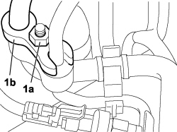
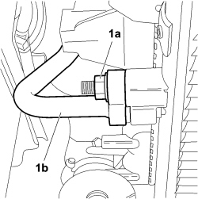
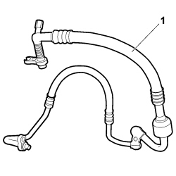
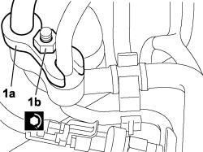
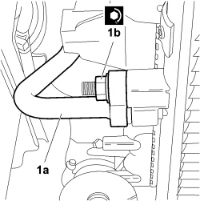

5040A82 PIPE FROM COMPRESSOR TO CONDENSER AND EXPANSION VALVE FITTING R R
- Path
- Procedures > 50 AUXILIARY UNITS > 5040 AIR CONDITIONING CASING AND COMPONENTS > 5040A AIR CONDITIONING REFRIGERANT CIRCUIT > 5040A82 PIPE FROM COMPRESSOR TO CONDENSER AND EXPANSION VALVE FITTING R R
- Kind
- repair procedure (removal / refitting; the operation number is the code)
- Applies to
- engines: 1.8; all production periods
- Interactive page
- https://sloeber94.github.io/elrnDB-fCrm/en/#/194003048
Applies to: engines: 1.8; all production periods
 Removing
Removing
 Refitting
Refitting- Follow the safety instructions
- Turn the ignition key to the OFF position.
- Disconnect the negative battery terminal.
Description | Connector | |
|---|---|---|
- | BATTERY |
Op. 0010T84 COOLANT FOR AIR CONDITIONING SYSTEM - DEHYDRATE AND REPRESSURIZE
Op. 7040D30 ENGINE BAY FRONT BEAM COVER - R R

Applies to: engines: 1.8; all production periods
1. Undo the nut (1a) securing the pipe (1b) to the intermediate coupling.

Applies to: engines: 1.8; all production periods
1. Loosen the nut (1a) fixing the pipe (1b) to the condenser.

Applies to: engines: 1.8; all production periods
1. Remove the air conditioning pipe.

Applies to: engines: 1.8; all production periods
Refitting
Removing- Position the air conditioner pipe in its seat on the compressor.
1. Unscrew the bolt (1a) securing the air conditioner pipe (1b) to the compressor, tighten to the specified torque and secure anchorage clamp (1c).
Component | Fastening | dia | Value (daNm) | Validity |
|---|---|---|---|---|
AIR CONDITIONING PIPE ON COMPRESSOR | Bolt | 1.6 ÷ 2.4 | 1.8 16v |

Applies to: engines: 1.8; all production periods
1. Position the pipe (1a) on the intermediate coupling and tighten the fixing nut (1b) to torque.
Component | Fastening | dia | Value (daNm) | Validity |
|---|---|---|---|---|
AIR CONDITIONING PIPE TO INTERMEDIATE COUPLING | Nut | 1.6 ÷ 2.4 | 1.8 16v |

Applies to: engines: 1.8; all production periods
1. Position the pipe (1a) on the condenser and tighten the fixing nut (1b) to torque.
Component | Fastening | dia | Value (daNm) | Validity |
|---|---|---|---|---|
AIR CONDITIONING PIPE TO CONDENSER | Nut | 1.6 ÷ 2.4 | 1.8 16v |

Applies to: engines: 1.8; all production periods
Op. 7040D30 ENGINE BAY FRONT BEAM COVER - R R
Op. 0010T84 COOLANT FOR AIR CONDITIONING SYSTEM - DEHYDRATE AND REPRESSURIZE
- Connect the negative battery terminal.
Description | Connector | |
|---|---|---|
- | BATTERY |